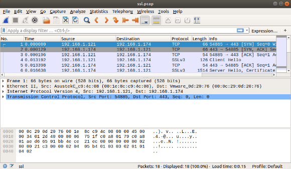

Inspecting SSL Traffic with Wireshark
Objectives
Estimated Time: 15 minutes
Part 1:
In this exercise, the objective is to learn about how SSL actually works. There have been a lot of misconceptions about how SSL works and what features it provides. Everyone seems to understand that SSL makes things secure, but exactly how is this done? We will try to demystify SSL in this exercise.
Requirements
- [x] Lab VM
Inspecting SSL Traffic
No Hints
Step by Step
We will use Wireshark to inspect a packet capture. Wireshark is a full-featured packet analysis tool. It includes the ability to decrypt SSL traffic as long as we provide the secret key or the session key negotiated between server and browser. In our example, we will use two files:
-
~/Documents/SSL/ssl.pcap -- a packet capture of https traffic
-
~/Documents/SSL/server.key -- the secret key used by the server in the above sample captures.
-
Click on the Wireshark icon on the left of the virtual machine desktop.

Wireshark Icon
-
After Wireshark starts up, click on the top menu "File" and then "Open". Select the following file: /home/student/Documents/SSL/ssl.pcap
Wireshark will now display its familiar default "3-pane" layout. At the top,
you will see a list of captured packets, one per line.
The second pane will "explain" the currently highlighted packet.
At the bottom, the third pane will display the entire packet in hexadecimal "as captured".

Wireshark Default Display
The first three packets (Nos. 1--3) hold the TCP three-way handshake. They establish the TCP connection and do not indicate that we are going to use SSL.
Packet 4, sent by the client (192.168.1.121) to the server (192.168.1.174), represents an "SSL Client Hello". With this packet, the client indicates that it would like to talk SSL to the server. It does provide some basic parameters that are used to negotiate the SSL connection.
By inspecting the middle pane, try to identify the following parameters:
What SSL version is the client using?
SSL 3.0
How many cipher suites does the client support?
12
Client Hello Details
In packet #5, the server acknowledges receipt of the client hello.
Packet 6 contains the server's response, a "Server Hello". This packet also includes the server's certificate. Just as for packet 4, identify the following parameters:
Which SSL version is the server accepting?
SSL 3.0
Which cipher suite did the server select?
TLS_RSA_WITH_RC4_128_MD5
Who issued the certificate?
SANS CA
What is the hostname (common name) of the server according to the certificate?
sanshost

Server Hello Details
Packet 12 is the first encrypted data packet.
How many bytes of encrypted data does it contain?
434

Encrypted Packets
Next, we will try to decrypt the packets.
To do so, we need to provide Wireshark with the secret key.
- Go to Edit->Preferences, then click on "Protocols" at the left-hand side of the Preferences window. Expand the list of protocols and find "TLS" (just type "TLS").
SSL Configuration Dialog
-
Click on the "Edit" button to the right of "RSA keys list:" and click the "+" button in the lower left-hand corner to add a new key.
-
You will now be able to enter the key parameters: IP Address: 192.168.1.174, Port: 443, Protocol: http. For the key file, please select "Documents" directory and then "SSL" where you can select the "/home/student/Documents/SSL/server.key".

SSL Key Configuration
Leave the "Password" field empty and click "OK" and close the "Preferences" Dialog by clicking OK. As soon as you close the dialogs, you should see decrypted traffic.
Packets 12 and 14 are now decrypted.
-
Decrypted Packets in Wireshark
-
Right-click on packet #12, then select "Follow -> TLS Stream" to reconstruct the payload of the HTTP request and response.
What is the content of the payload of the response?
HTTP Request - The page has HTML content of a message "The Secret key is: Perfect 10"

Decrypted SSL Stream
Advanced: SSL Master Key
In this exercise, we will decrypt SSL without knowing the server's private key. After all, the client has to be able to decrypt the content without the server's keys. Instead, the symmetric key that is negotiated during the SSL handshake is needed. If Diffie-Hellman ciphers are used, then this is the only method to decrypt traffic.
Chrome (and Firefox) are able to log the symmetric master keys to a file, and Wireshark is able to use this file to decrypt the content.
-
Start Wireshark.
-
Select the "Loopback: lo" interface and click the blue "fin" on the far left of the toolbar. Wireshark will now start to collect data.
Starting Packet Capture in Wireshark
-
Close Chrome first if it is running.
-
Open Chrome FROM THE COMMAND LINE (not by clicking on the icon). To do this, open a terminal and then enter "google-chrome". This will apply the necessary bash environment variables to Chrome to log the master keys.
google-chrome -
Visit https://wiki.sans.labs/ (it is a TLS protected site)
-
Close Google Chrome.
-
Stop the acquisition in Wireshark by clicking on the red square.
-
To display only the SSL traffic, enter "tls" as a filter and click "Apply". You will recognize the now-familiar packets like "Client Hello" and "Server Hello".
-
Just like before, we enter the RSA key configuration dialog. Select Edit->Preferences from the Wireshark menu and proceed to the TLS protocol configuration. But instead of editing the RSA keys list, we just select a (Pre)-Master-Secret log filename at the bottom of the dialog.
-
Use /home/student/Documents/sslkeylogfile.log
-
Just like before, the HTTPS traffic will now be decrypted. But this time, we used symmetric keys captured by the client.
Information
The reason why we are launching Chrome from the shell is because of the environment variable in the shell environment called "SSLKEYLOGFILE". This environment variable tells the browser to capture a copy of the SSL key into the disk drive for debugging purpose. This method illustrated in part 2 of the exercise is exactly how anyone can debug their traffic with a TLS website. If you ever need to get to decipher the TLS protected traffic with a website, let's say, Google or Facebook. This method allows you to decrypt the traffic from the workstation.
Conclusion
- While TLS/SSL is known for protecting traffic between two network hosts, the traffic protected by it can be reverted to cleartext given the right circumstances.
- To debug your own SSL/TLS traffic, use the SSLKEYLOGFILE environment variable to enable the debugging mode in the browser so that encryption key can be captured.
Explore Further
- Visit an Internet site with SSL and see if you can capture the TLS key on your SSL session.